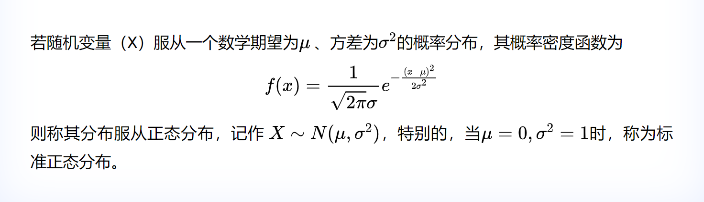

正态分布与numpy.random.normal函数
在Numpy中，有一个专门用于生成符合 正态分布 的随机数函数： numpy.random.normal ，本文我们梳理一下它的使用方法，在梳理前，需要先了解一下什么是正态分布。(本文地址： https://laurence.enlightgram.com/ai-ml/normal-distribution-numpy/ ，转载请注明出处)
1. 正态分布

正态分布（Normal Distribution）又称高斯分布（Gaussian Distribution）。记得以前这个函数是在大学概率论里才介绍的，现在它已经出现在了高中课本中…这个神奇的函数描绘了现实世界中绝大多数事物的分布形态，用通俗的话解释“正态分布”就是： 一个群体在某种指标上，绝大部分个体会落在平均值附近，超过平均值太多或低于平均值太多的个体数量都很少 。正态分布函数的发现也非常漫长和曲折，感兴趣的读者可以阅读一下此文： 《从数理统计简史中看正态分布的历史由来》
在这个函数中，我们要重点记住它的两个变量，它们也是后面 numpy.random.normal 函数的两个重要参数：
试读结束

正态分布与numpy.random.normal函数
https://laurence.enlightgram.com/ai-ml/normal-distribution-numpy/